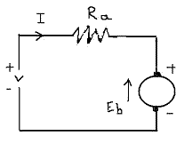

• Working Principle
• Equivalent Circuit
• Advantages
• Disadvantages
• Applications

Permanent Magnet DC Motor
In a dc motor, an armature rotates inside a magnetic field. Basic working principle of DC motor is based on the fact that whenever a electric current carrying conductor is placed inside a magnetic field, there will be mechanical force experienced by that conductor. All kinds of DC motors work in this principle only. Hence for constructing a dc motor it is essential to establish a magnetic field. The magnetic field is obviously established by means of magnet. The magnet can by any types i.e. it may be electromagnet or it can be permanent magnet. When permanent magnet is used to create magnetic field in a DC motor, the motor is referred as permanent magnet dc motor or PMDC motor. Have you ever uncovered any battery operated toy, if you did, you had obviously found a battery operated motor inside it. This battery operated motor is nothing but a permanent magnet dc motor or PMDC motor. These types of motor are essentially simple in construction. These motors are commonly used as starter motor in automobiles, windshield wipers, washer, for blowers used in heaters and air conditioners, to raise and lower windows, it also extensively used in toys. As the magnetic field strength of a permanent magnet is fixed it cannot be controlled externally, field control of this type of dc motor cannot be possible. Thus permanent magnet dc motor is used where there is no need of speed control of motor by means of controlling its field. Small fractional and sub fractional kW motors now constructed with permanent magnet.
Construction of Permanent Magnet DC Motor or PMDC Motor
Stator of Permanent Magnet DC Motor
As it is indicated in name of permanent magnet dc motor, the field poles of this motor are essentially made of permanent magnet. A PMDC motor mainly consists of two parts. A stator and an armature. Here the stator which is a steel cylinder. The magnets are mounted in the inner periphery of this cylinder. The permanent magnets are mounted in such a way that the N – pole and S – pole of each magnet are alternatively faced towards armature as shown in the figure below. That means, if N – pole of one magnet is faced towards armature then S – pole of very next magnet is faced towards armature.
In addition to holding the magnet on its inner periphery, the steel cylindrical stator also serves as low reluctance return path for the magnetic flux. Although field coil is not required in permanent magnet dc motor but still it is sometimes found that they are used along with permanent magnet. This is because if permanent magnets lose their strength, these lost magnetic strengths can be compensated by field excitation through these field coils. Generally, rare earth hard magnetic materials are used for these permanent magnet.
Rotor : The rotor of pmdc motor is similar to other DC motor. The rotor or armature of permanent magnet dc motor also consists of core, windings and commutator. Armature core is made of number of varnish insulated, slotted circular lamination of steel sheets. By fixing these circular steel sheets one by one, a cylindrical shaped slotted armature core is formed. The varnish insulated laminated steel sheets are used to reduce eddy current loss in armature of permanent magnet dc motor. These slots on the outer periphery of the armature core are used for housing armature conductors in them. The armature conductors are connected in a suitable manner which gives rise to armature winding. The end terminals of the winding are connected to the commutator segments placed on the motor shaft. Like other dc motor, carbon or graphite brushes are placed with spring pressure on the commutator segments to supply electric current to the armature.
Working Principle of Permanent Magnet DC Motor or PMDC Motor
As we said earlier the working principle of PMDC motor is just similar to the general working principle of DC motor. That is when a carrying conductor comes inside a magnetic field, a mechanical force will be experienced by the conductor and the direction of this force is governed by Fleming’s left hand rule. As in a permanent magnet dc motor, the armature is placed inside the magnetic field of permanent magnet; the armature rotates in the direction of the generated force. Here each conductor of the armature experiences the mechanical force F = B.I.L Newton where B is the magnetic field strength in Tesla (weber / m2), I is the electric current in Ampere flowing through that conductor and L is length of the conductor in metre comes under the magnetic field. Each conductor of the armature experiences a force and the compilation of those forces produces a torque, which tends to rotate the armature.
Equivalent Circuit of Permanent Magnet DC Motor or PMDC Motor

As in PMDC motor the field is produced by permanent magnet, there is no need of drawing field coils in the equivalent circuit of permanent magnet dc motor. The supply voltage to the armature will have armature resistance drop and rest of the supply voltage is countered by back emf of the motor. Hence voltage equation of the motor is given by,
Where I, is armature electric current and R is armature resistance of the motor.
Eb is the back emf and V is the supply voltage.
Advantages of Permanent Magnet DC Motor or PMDC Motor
PMDC motor have some advantages over other types of dc motors. They are :
- No need of field excitation arrangement.
- No input power in consumed for excitation which improve efficiency of dc motor.
- No field coil hence space for field coil is saved which reduces the overall size of the motor.
- Cheaper and economical for fractional kW rated applications.
- In this case, the armature reaction of DC motor cannot be compensated hence the magnetic strength of the field may get weak due to demagnetizing effect armature reaction.
- There is also a chance of getting the poles permanently demagnetized (partial) due to excessive armature electric current during starting, reversal and overloading condition of the motor.
- Another major disadvantage of PMDC motor is that, the field in the air gap is fixed and limited and it cannot be controlled externally. Therefore, very efficient speed control of DC motor in this type of motor is difficult.
Disadvantages of Permanent Magnet DC Motor or PMDC Motor
Applications of Permanent Magnet DC Motor or PMDC Motor
PMDC motor is extensively used where small dc motors are required and also very effective control is not required, such as in automobiles starter, toys, wipers, washers, hot blowers, air conditioners, computer disc drives and in many more.
 by
by